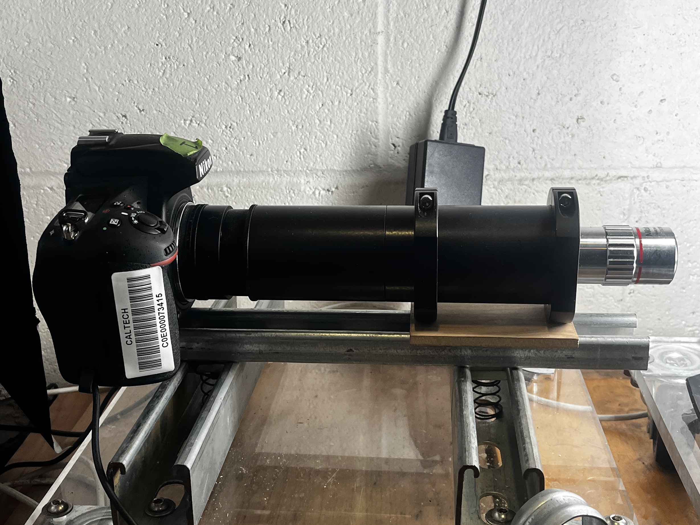
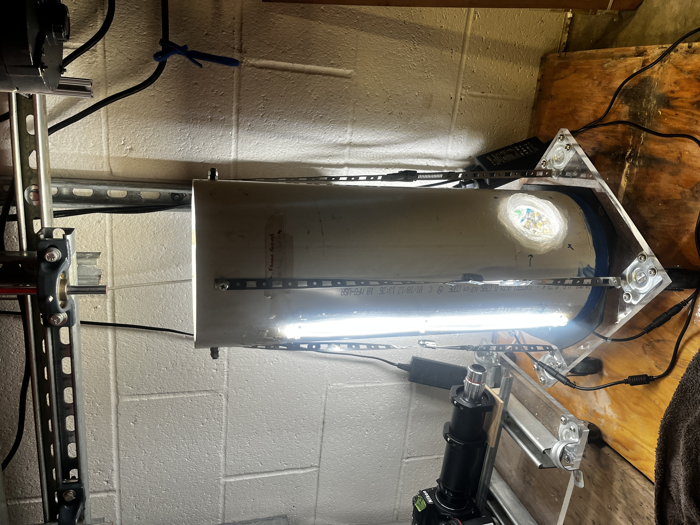
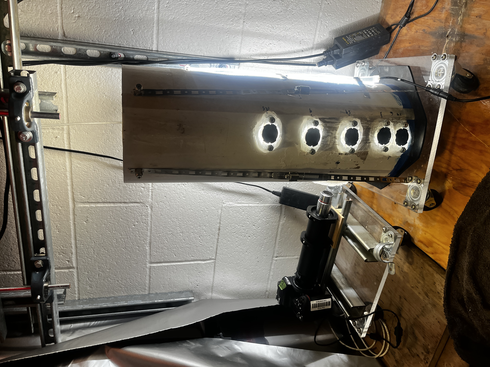
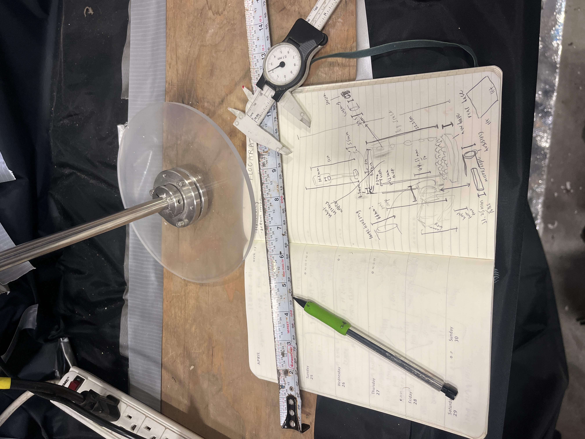
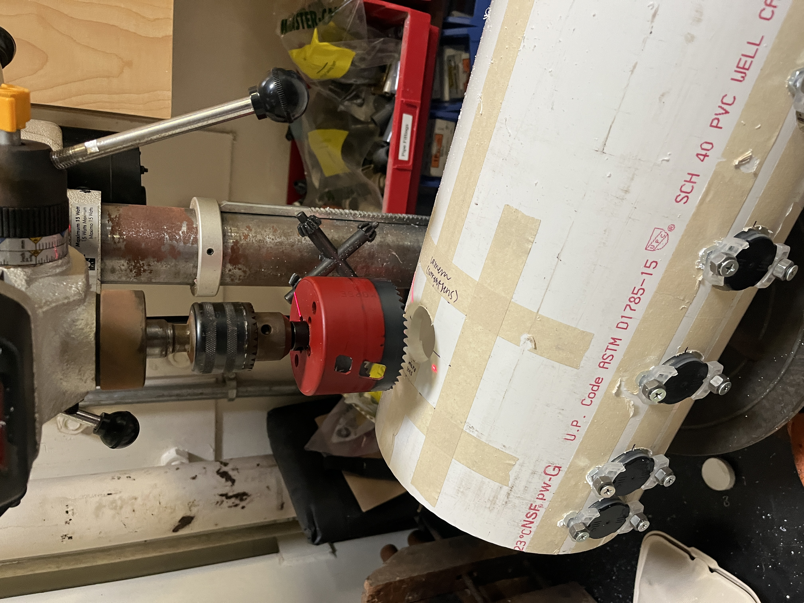
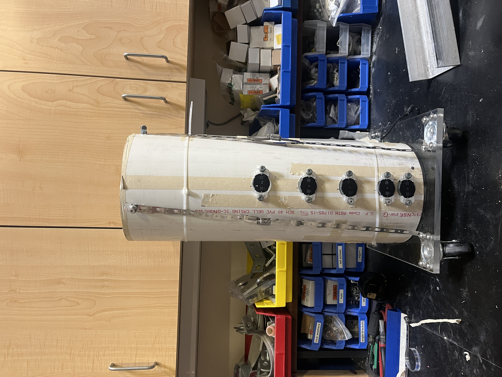
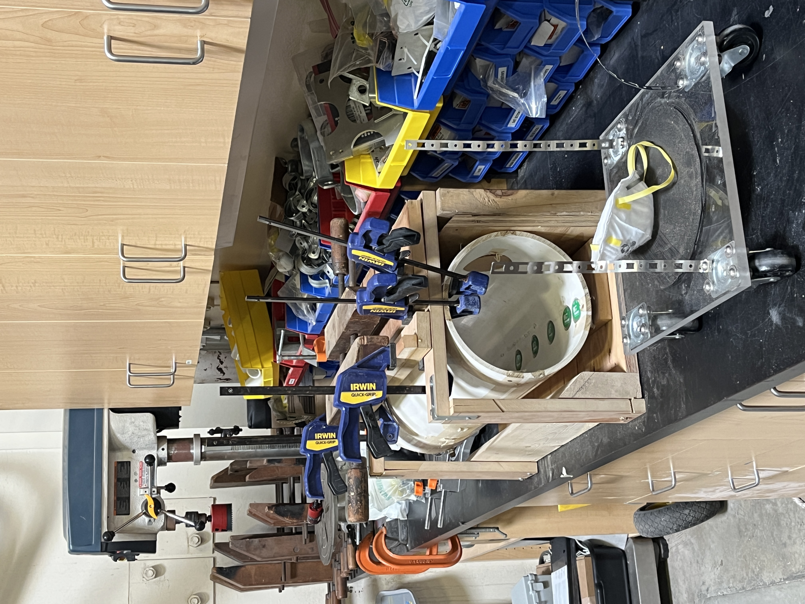
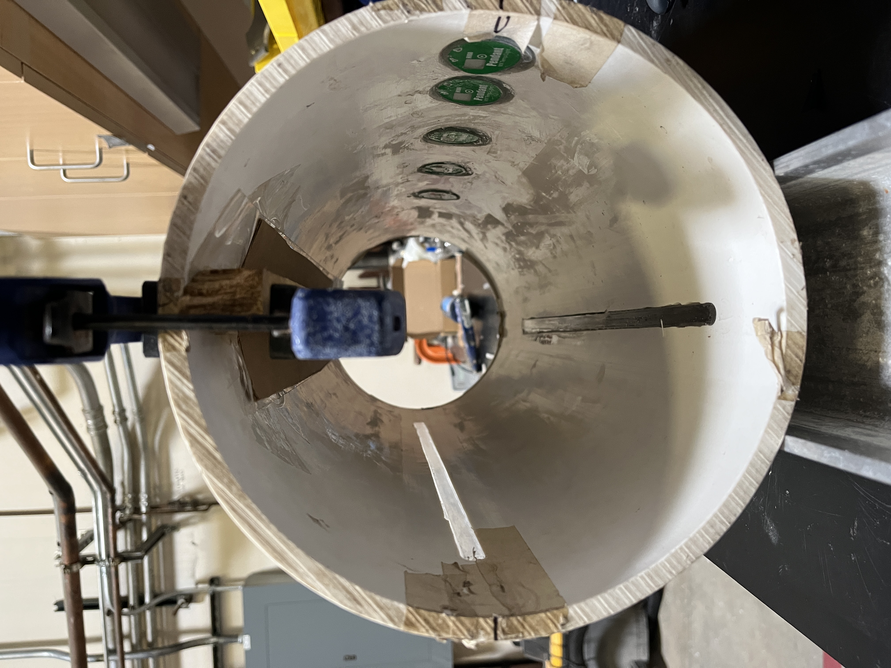
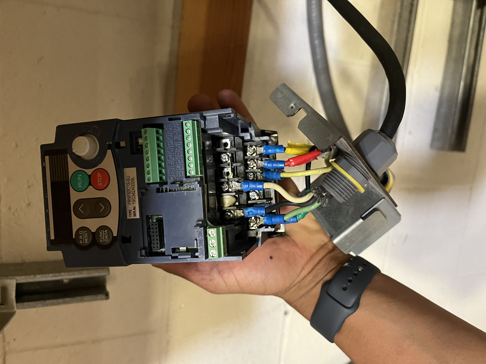

SEDIMENT MILL → OPTICAL ENGINEERING

Click to zoom







Overview
Custom-built sediment mill system for high-resolution microscopy and particle analysis. The mill enables detailed characterization of sediment particles and flocs through precision optical engineering.
The sediment mill represents a specialized tool for investigating sediment dynamics at the microscale. By combining custom optical engineering with standard DSLR photography, the system achieves high-resolution imaging of fine sediment particles, clay aggregates, and flocculated material.
This instrument was developed as part of research in the Earth Surface Dynamics Laboratory at Caltech, where it supports investigations into sediment transport, flocculation processes, and particle morphology.
Camera Build & Lens Info
Camera used is a typical Nikon D750 with no special modifications. Lens and microscope build is from Ted Kinsman, an optical engineer and photography expert from Rochester Institute of Technology. The lens setup enables macro photography at extreme magnifications suitable for sediment particle analysis.
Sediment Mill Design
The mill consists of a precision grinding mechanism paired with the optical system to prepare and image sediment samples. The integrated design allows for sample preparation and immediate imaging, streamlining the workflow for sediment characterization studies. The system has been particularly useful for analyzing flocculation behavior in fine-grained sediments and for documenting particle size distributions in unconsolidated samples.